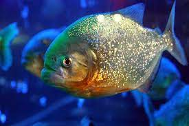

A piranha or piraña (/pɪˈrɑːnjə/, /pɪˈrænjə/, or /pɪˈrɑːnə/; Portuguese: [piˈɾɐ̃ɲɐ] or [piˈɾɐ̃j̃ɐ], Spanish: [piˈɾaɲa]), a member of family Serrasalmidae,[1] or a member of the subfamily Serrasalminae within the tetra family, Characidae[2] in order Characiformes. They are freshwater fish that inhabit South American rivers, floodplains, lakes and reservoirs. Although often described as extremely predatory and mainly feeding on fish, their dietary habits vary extensively, and they will also take plant material,[3] leading to their classification as omnivorous.[4]